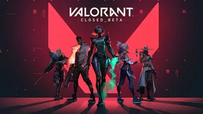

Valorant is a free-to-play first-person tactical hero shooter developed and published by Riot Games, for Windows. Teased under the codename Project A in October 2019, the game began a closed beta period with limited access on April 7, 2020, followed by a release on June 2, 2020